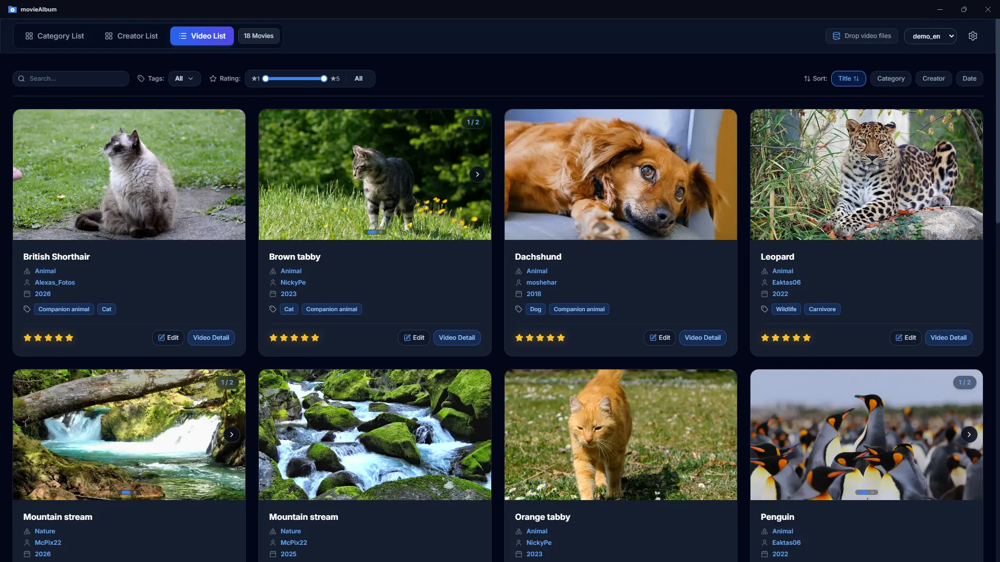
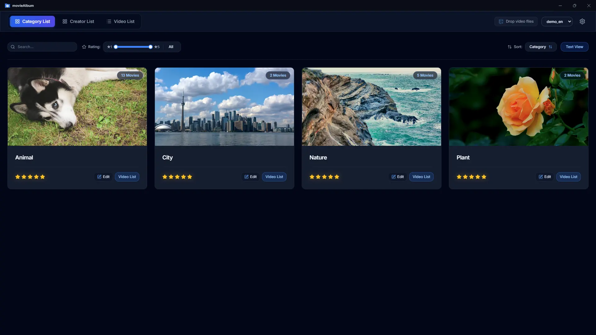
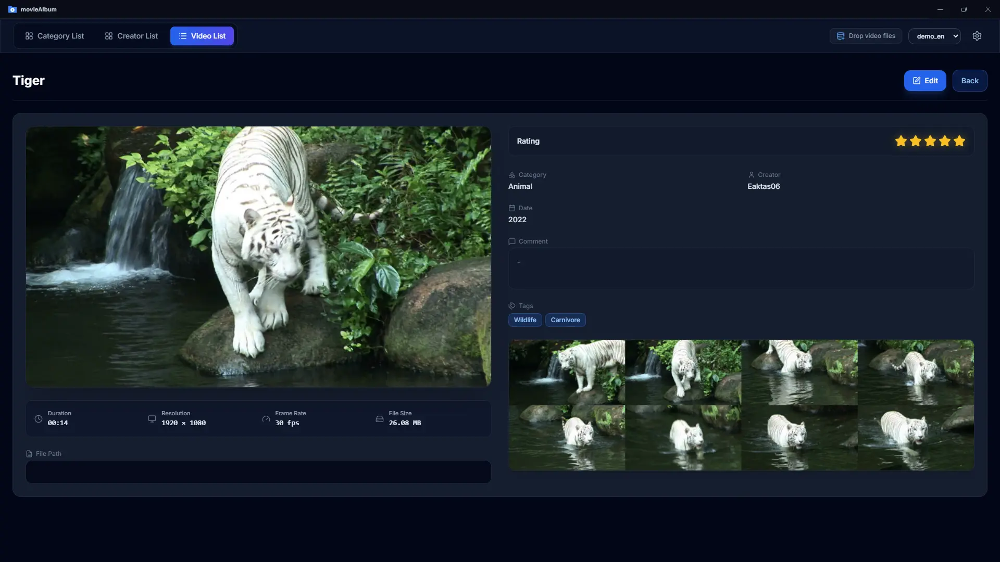
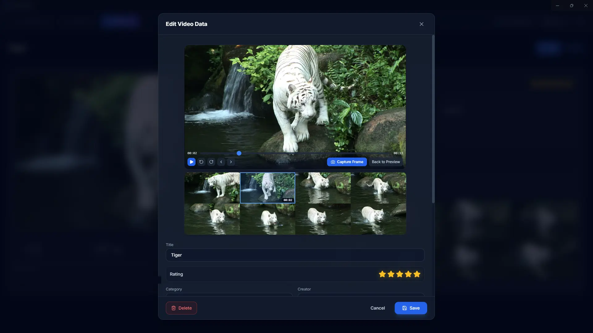

About movieAlbum
movieAlbum is a video management app for Windows that lets you efficiently organize and browse the
video collection on your PC.
Most video managers only let you rate or tag individual video files, making it hard to organize your
library around what truly matters to you.
For example, imagine you want to search your TV anime collection by the original creator. Tagging
dozens of episodes one by one is tedious. Since the creator is tied to the series title, it makes
much more sense to group videos by title and apply tags to the group as a whole.
With movieAlbum, you can rate and tag not just individual videos, but also any custom categories you
choose.
You can also group multi-part videos—such as Part 1 and Part 2—into a single entry. Plus, with
support for multiple configuration files, you can easily switch between completely separate
libraries like "Movie Collection," "Travel Memories," and "Food Videos."

Examples of use
| Genre | Organized by |
|---|---|
| Movie collection | Genre, Lead actor, Director |
| Travel memories | Destination, Year, Members |
| Food/dining videos | Genre, Area, Price range |
Use with Complete Peace of Mind
Videos are played using your familiar, default Windows media player.
All data is managed entirely within the app's internal database—it never writes to your video
files or sends any data externally.
A 30-day free trial. There are no feature restrictions during the trial period.
Screenshots

You can filter videos by category, name, year, tags, and rating, and sort them by title, category, name, or publication date. Clicking a thumbnail launches the video player.

You can assign tags and ratings to these categories independently of the individual videos. Filtering by tags or ratings and sorting by the defined categories are supported. Clicking a thumbnail navigates to a filtered list of videos.

Grouped videos are displayed in a slider format. Clicking a thumbnail launches the video player.

You can set a favorite moment as the thumbnail (some limitations apply depending on the video format).
Key Features
- Flexible Classification: Easily categorize and sort your videos by category, character/cast, rating, custom tags, and more.
- Custom Lists: Create personalized video lists based on your selected criteria to find exactly what you want to watch instantly.
- Scene Bookmarks: Save your favorite moments as thumbnail images for quick access (some limitations apply depending on the video format).
- Smart Grouping: Group related videos together to keep your workspace clean and organized.
Supported file types
- mp4
- m4v
- webm
- ogv
- ogg
- avi*
- wmv*
- and more.
* has limitations.
Download movieAlbum today and elevate your video viewing experience!
Update History
- version 1.4.3
-
- Added the ability to generate thumbnail images from timeline thumbnails.
- version 1.4.2
-
- Added a light theme.
- UI improvements.
- version 1.4.1
-
- Improved the UI of the filtering feature.
- version 1.4.0
-
- Added timeline thumbnails to the video details screen.
- version 1.3.1
-
- UI improvements, bug fixes.
- version 1.3
-
- You can now create up to 3 custom lists.
- Fixed an issue with ungrouping.
- version 1.2.3
-
- UI for tags improved.
- version 1.2.2
-
- Adjusted the layout of the video details screen.
- Fixed a tab key operation bug.
- Added open source license attribution.
- version 1.2.1
-
- Minor text corrections.
- version 1.2.0
-
- Changed the display of group videos to a slider format.
- Support for Simplified Chinese and Traditional Chinese has been added.
- version 1.1.0
-
- Added search functionality.
- Improved thumbnail generation for WMV and other video formats.
- Adjusted layout on window resizing.
- version 1.0.1
-
- Added support for switching configuration files.
- Improved performance.
- version 1.0.0
-
- Switching configuration files is now supported.
- Initial release.
Privacy Policy
- This app does not collect, store, or transmit any personal data.
- No information is shared with external servers or third parties.
License & Acknowledgements
movieAlbum is released under the MIT License.
This application bundles and uses FFmpeg (GNU GPL v3.0, gyan.dev
build) for video thumbnail generation and metadata parsing. For inquiries regarding the
source code of bundled binaries, please contact us via the GitHub repository or developer.